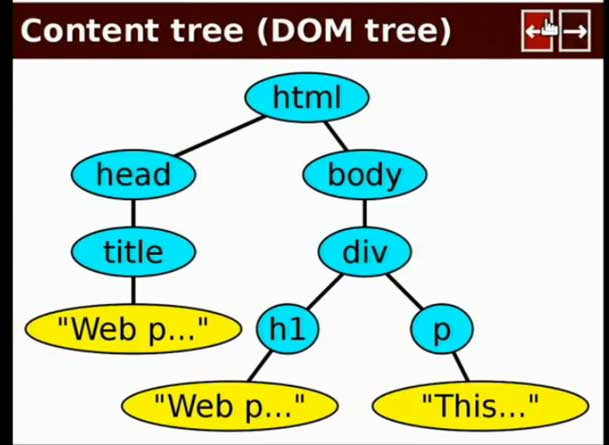
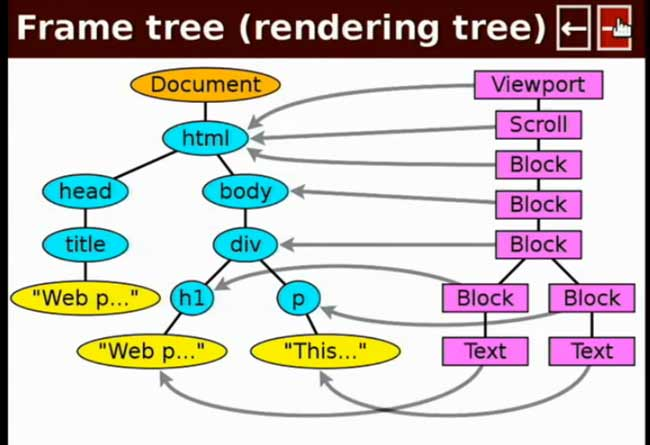

Every time you open a new browser window (or tab), you create a new Window Object. The window object has a number of child objects that include properties of the window, including the Document Object.
When an HTML file is loaded into a browser, it becomes the Document Object of its parent Window Object
The Web Browser
Window Properties
The window is the top level object that holds the javascript accessible properties and methods of the browser, screen and loaded document.
window.document
window.location.href
window.localStorage
window.console.log()
window.setTimeout()
Not necessary to include the window reference when using its property or methods.
window.document == document window.setTimeout() == setTimeout()
The Web Browser
The DOM

The DOM, or Document Object Model primarily defines the rules for how a document should be structured. Most simply, the DOM interprets documents built as a nested tree structure, and accepts both HTML and XML documents.
While ultimately DOM elements (from HTML) turn into pixels on the screen, the core of HTML is the relationships between the elements:
Parents: The direct container of another element.
Descendants: Any elements within a parent.
Siblings: Elements that share the same parent.
Children: The direct descendants of a parent.
Ancestors: Any level container that includes the element.
The Web Browser
The Screen

Two main things happen when a browser loads a document:
It builds the DOM tree, and then
Renders the View.
HTML should be written to describe the organization of the data, not how it will look on the screen.
CSS should take care of the rest.
Primary difference is that now you have a presentation attribute associated with each element.
Not absolutely necessary to include a class for each artist <span> or song <li> since they are arrays that can be described by their parent container.
A class would be needed if either elements had child elements of the same tag type.
Semantics
JSON == XML == HTML
JSON:
var album = {
artists: ['Artist 1', ...],
name: 'Album Name',
playlist: [ 'Song 1', 'Song 2', .... ]
}
Semantics
Don't Just Use DIVs (& ULs)
Many semantic elements can be used to differentiate from a generic <div> or <span> element.
Eliminate excessive classnames by giving tags a consistent specific purpose.
dedicate special purposes for inline elements within a particular parent: <span>, <strong>, <em>
<dl>s - Definition Lists, perfect for key value pair relationships
Selectors should explain content even without HTML:
Album
Artists
Artist 1
Name
Playlist
Song 1
Class name makes sense in Javscript as well as CSS:
$('.blue_button').click(); // no context for Javascript/jQuery
$('.close_button').click(); // has logical purpose in jQuery function
Class name makes sense as a property of a parent element:
.popup_window .blue_button // no relationship btw parent and child
.popup_window .close_button // logical relationship
Optimally, you should be able to understand what markup
means without looking at the screen.
Semantics
Dont's
Presentational Class Names mean nothing. If layout/color changes in CSS, classes will have no relevance: .blueBackground, leftColumn
Tag names in classes are redundant and do not describe meaning. Also it is possible you want to change the tag or use the class on several different tags: .fieldset_small, .divContent
Keep abbreviations to a minimum. Slightly longer class names are worth it if they are easier to understand for other humans.
Selectors
What is CSS?
Basically CSS is just a set of key:value pairs, or more specifically scope:value pairs.
or in CSS syntax:
selector scope { attributes }
The selector scope is one or an arrangement of #id's, .classes and HTML tag names used to identify which elements to apply attributes to.
A browser parses a collection of CSS rules and applies cascading styles based on the order of the rules and specificity of their selector scope.
Selectors
Why CSS Sucked
Style rules are not intuitive
Creating selector scope is complicated: easy to accidentally overwrite styles.
Cascading rules get messy: rules include not only order of inclusion, but also level of specificity.
No Child Selectors: not possible to access only direct child elements, could only access all descendant elements.
Selectors
Which selector(s) to use?
Three options for creating accurate selector scope:
Global Selectors: relative to all matched elements
a { // global attributes for all links }
Descendant Selectors: encapsulates styles for matched elements within a parent.
.parent a { // link attributes only within .parent }
spaces between selectors indicate nesting
Chaining Selectors: inherits any attributes from base classes plus unique attributes.
.parent.configclass a { // link attributes within .parent only with second config class. }
no space between classes/id's require all selectors to be present for rule to apply.
If styles are scoped with the correct selectors, modifications and scalability become much much easier.
Selectors
Overly specific selectors
Say we want to add a 10 pixel bottom margin to each content section in a sidebar.
We can apply the CSS Rules directly to the IDs:
But then all descendants of #sidebar (every element in it) will get the margin, not just the direct children .
Selectors
Just unique enough selectors
Say we want to add a 10 pixel bottom margin to each content section in a sidebar.
We can create a new common class and apply the CSS rules to that class:
Now CSS rule is scoped only to #sidebar, allowing us to use class .module anywhere else with no conflicts.
Selectors
Chaining configurable classes
Now what if we want to remove the bottom border on the last one?
<div id="sidebar" >
<div id="user_details" class="module" >...</div>
<div id="rss_feeds" class="module" >...</div>
<div id="links" class="module last" >...</div>
</div>
#links { margin-bottom:0px; }
No! Same problem, what if #links isn't always last?
#sidebar .module_last { copied attributes of .module + margin-bottom:0px; }
No! Now we have two class names to consider and repeated code
#sidebar .module.last { margin-bottom:0px; }
Yes!
Selectors
Scoping vs. Styling
Often a selector will be used to style itself in the context of it's parent,
but also as a hook to style its inner contents.
#sidebar .module { margin-bottom:10px; }
// Defining an elements purpose relative to its parent.
#rssfeed.module .description { font-size:11px; }
// Hook to style an inner element within a certain scope
// For example, #rss_feed may exist elsewhere in the site,
// but within the module only, we want to make the description text smaller.
It is perfectly acceptable to use a selector repeatedly within different contexts.
Selectors
Cascading by Order
Last rule is the rule.
23 .module { font-size:14px; }
...
112 .module { font-size:12px; } // this rule will apply to .module
Selectors
Cascading by Specificity
But more specific rules take precedence regardless of the ordering.
23 #sidebar .module { font-size:14px; } // this rule will apply to .module
...
112 .module { font-size:12px; }
Selectors
Cascading using !important
!important will enforce the rule even if a subsequent rule is applied.
23 .module { font-size:14px !important; } // this rule will apply to .module
...
112 .module { font-size:12px; }
Stay away from using this. This will complicate your cascading rules and make things much harder to manage. Figure out why the ordering is overwriting the style.
Only real use should be to overwrite some proprietary CSS when you don't have access to the original stylesheets.
Selectors
Dont's
Avoid redundant class names that can be scoped with existing selectors.
The h2 can be described relative to the parent, so .article_header is not necessary.
.article h2 { attributes } // Right
As long as a tag type has a single purpose within a parent container, use a descendant selector instead of adding a new class.
LESS CSS
Super CSS
LESS CSS is a framework that supplies programmatic functionality on top of native CSS. Less syntax gets compiled down to flat CSS when run through the LESS compiler.
To use the Javascript implementation, include your CSS LESS files and the JS script in the head of your document.
<head>
...
<link rel="stylesheet/less" href="yourLESSFile.less" type="text/css" />
<script src="lib/less-1.1.3.min.js"></script> // include after all less files
...
</head>
LESS CSS
Create scope easily
Much easier to encapsulate styles by applying scope through nesting CSS rules. Instead of repeating parent selectors for each rule, selectors are in a similar structure as the corresponding HTML.
#sidebar { attributes
.module { attributes
&.last { attributes for last module }
&:hover { attributes when hovering on module }
}
#rss_feeds { only attributes within #sidebar
&.detailview { custom attributes for a detailview state of rss_feed within sidebar }
}
}
Can also be used to group common styles, states, and behaviors together. The left/right and menu toggle buttons below are different selectors, but we can apply common styles from the same mixin.
If you have multiple CSS files, you don't want to repeat your mixins in each file. Fortunately you can share them across different CSS files by placing this import statement at the top of each file.
@import "commonmixins";
This will look for commonmixins.less in your files and import into each referenced file.
Layout Attributes
Inline Elements
All elements have a default display property, either block or inline.
Inline elements are generally used for content.
Inline elements start on the same line as the previous element and wraps to the next line as needed.
An inline element takes the width of it's inner contents.
Floats change block elements to appear directly next to the previous block (either LTR or RTL). Use for dynamically sized content. The elements' boundaries impact and are impacted by the boundaries of its siblings.
Floating changes a block's default width from 100% of its parent to the size of its contents.
Floating the parent has a side effect of also clearing any uncleared floats within the element, but this should never be done as a replacement for the other clearing methods.
Layout Attributes
Float Height Craziness
Mixed heights on floated elements will have some undesired effects.
The menu on the left also uses fixed positioning with top/bottom position values to take up the full height of the screen and stay in the same place when the page is scrolling.
Generally, using padding is a safer way to go than margins.
Margins should be dedicated to pushing away the next element in the page flow (like in a list of items).
Layout Attributes
Overflow Hidden
Overflow allows a parent element to control the boundaries of its children.
overflow: visible - default state overflow: hidden - hides everything outside the parent boundaries
overflow: scroll - always adds scrollbars to element (even if not needed). overflow: auto - adds scrollbars to the parent element only if the content gets too large.
Some dummy content
Some more dummy content
And more dummy content
And more dummy content
And more dummy content
And more dummy content
And more dummy content
And more dummy content
Without overflow, if you set a height on a parent element that's smaller than its inner contents, they will display beyond the parent's boundaries.
As you can see you can also set overflow on only the x or y orientation. If you set one, you should to set the other one to hidden or visible to avoid potential browser issues.
Layout Attributes
Display:none vs. visibility:hidden
Display:none removes the element from the page flow. Any layout space taken up by the element is removed.
Visibility:hidden keeps the element in the page flow, but hides it. Any layout space taken up by the element remains.
CSS Tips
CSS Boilerplate
Browsers supply (potentially) different default styles so a CSS-free page looks presentable.
Reset these with a CSS reset file so your CSS does not inherit any browser default styles. Include the reset first in the html head (before all other CSS files).
This file also includes some default presets for commonly used element styles.
CSS Tips
Organizing yer attributes
Whatever convention you choose, you should follow a consistent pattern for organizing your styles.
A common approach is to list attributes alphabetically, or the following is another approach organized by attribute type.
Like the previous example, this allows you to set different CSS rules automatically based on different screen types and resolutions. This way, you can have custom styles for a large screen, smaller screen, smart phone, tablet, etc.
Include these sections after your default CSS to update selectors with the custom styles. Decrease the screen width to see an example of media queries.
@media screen and (max-width: 600px) { // rules } // Tablet size screens
@media only screen and (min-width : 1824px) { // rules } // Giant Monitors
@media only screen and (-webkit-min-device-pixel-ratio: 2) { // rules } // iPhone 4
You can also use this for creating print view only styles.
@media print { // rules }
Currently you cannot use LESS syntax witin a media query section.
Allows you to add custom attributes to an html element that will validate correctly.
In this slideshow we use a custom data attribute to tell javascript when a new category is starting.
<article data-newcategory="true">
Using jquery, you can access these data attributes easily with jQuery's .data() binding method
if ( $('article').data('newcategory') == true ) { // Do something }
Browsers will automatically set the data attribute name to lowercase, so you shouldn't use caps in your data attributes.
HTML5 New Stuff
localStorage
Provides a persistent site-specific data source for storing data across browser sessions.
Essentially, it is just a standardized global variable of the window object, that behaves like any other object.
In this slideshow, we store the index of the active slide in localStorage, and when a user returns to the page, we look for the localStorage value to return the user to the active slide.
Set: localStoage['activeSlideIndex'] = activeSlideIndex;
Get: var activeSlideIndex = localStorage['activeSlideIndex']